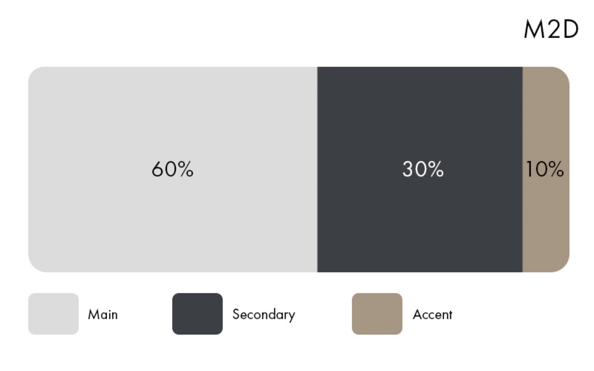
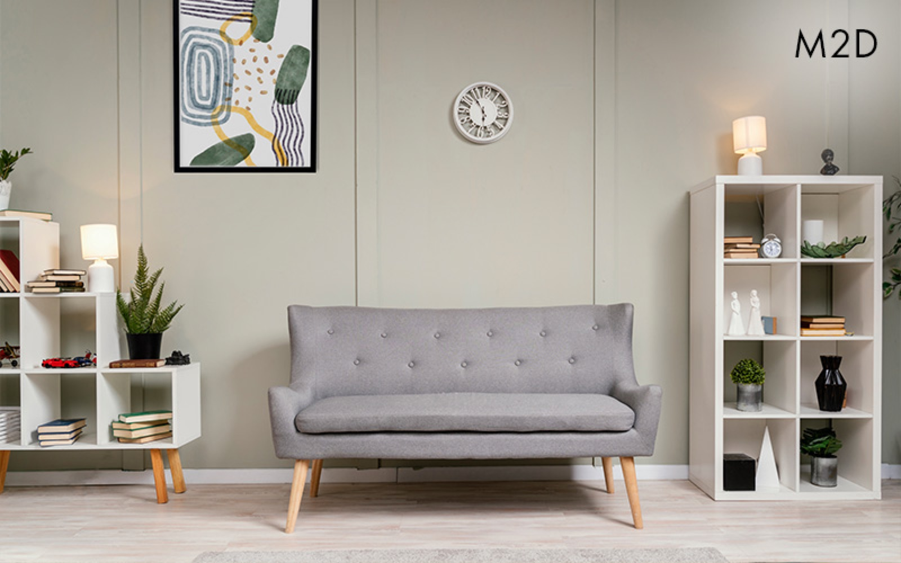
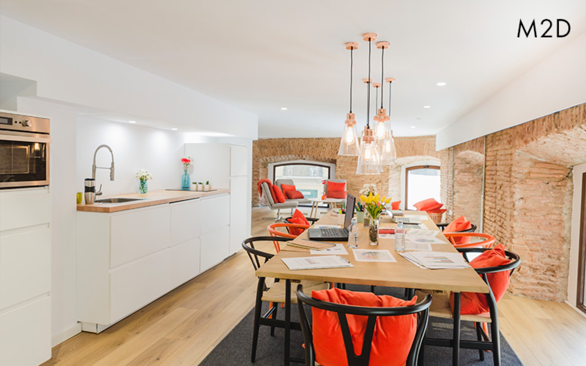
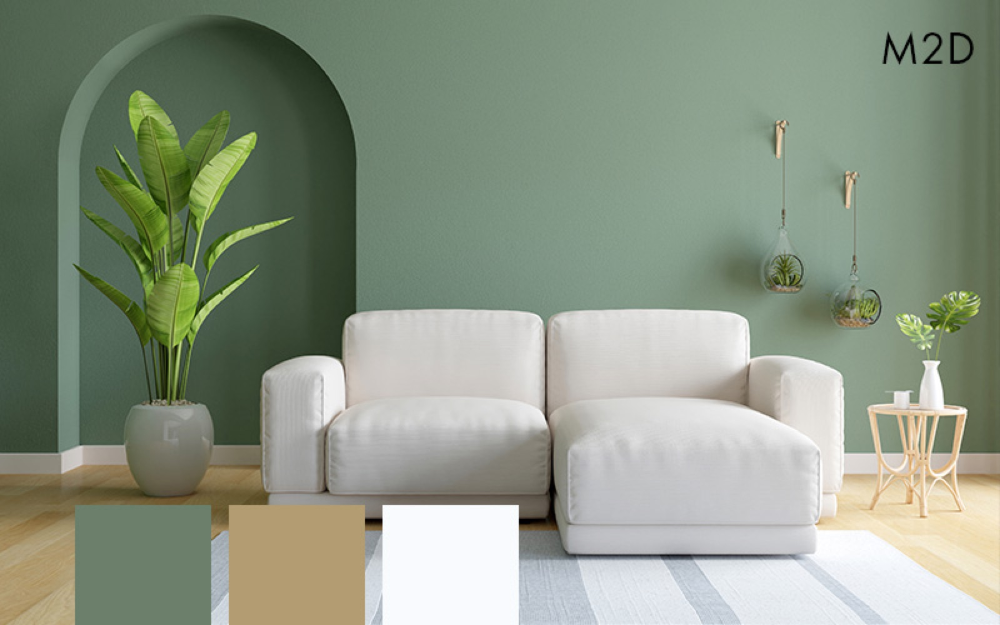

Key Takeaways
The 60-30-10 rule creates visual harmony by dividing your colour palette into dominant, secondary, and accent tones.
It is an easy-to-follow interior design principle that simplifies colour selection and ensures every room looks intentional and balanced.
This approach works well across styles and homes, including 3-room HDB interior design in Singapore.
Planning your home's colour palette can be a challenging prospect. From choosing wall paint to matching curtains, cushions, and furniture, there are many decisions to be made. This is where the 60-30-10 rule could prove highly useful. This trusted interior design principle is a simple yet effective way to organise colour in a room and make it feel balanced and complete. It is also widely used in professional interior design services.
Whether you are designing a 3-room flat or a landed property, understanding this method can make your home look and feel more cohesive.
What is the 60-30-10 Rule?

The 60-30-10 rule is a classic rule of thumb used in interior design to guide how colour is distributed in a space. It breaks your palette into three parts:
60% — The Dominant Colour
This forms the base of your room’s colour scheme. It typically appears on walls, flooring, or large furniture pieces such as sofas or wardrobes. This colour sets the overall tone and should feel calm and versatile. Neutral tones like white, grey, or beige often work well, especially in smaller spaces like 3-room HDB flats, where light tones can help open up the room.
30% — The Secondary Colour
This is the supporting colour that brings contrast and depth. It often shows up on items like curtains, cabinets, accent chairs, or even feature walls. The secondary shade complements the dominant colour without overpowering it. For example, if your dominant colour is light grey, a soft navy or sage green can serve as a gentle contrast.
10% — The Accent Colour
This is where the fun begins. Accent colours are your opportunity to inject personality and vibrancy into the space. These bolder tones are best used in small touches such as throw pillows, vases, artwork, or decorative items. In a neutral room, a pop of mustard yellow or teal can create a striking effect without overwhelming the design.
Why the 60-30-10 Rule Works

This rule works so well because it simplifies the colour selection process while ensuring the space feels well-thought-out. By assigning specific roles to each colour, you create a hierarchy that guides the eye naturally through the room. It also prevents common issues such as colour overload or mismatched tones.
For Singapore homes, where layouts are often compact and natural light may be limited, applying the 60-30-10 rule can make even a small room feel more open and intentional. It helps create a visual flow and ensures every colour in the room has a clear purpose.
How to Apply It Across Different Rooms

Living Room
Use a soft neutral for the walls and main furniture (60%), a deeper tone for curtains and a feature armchair (30%), and a bright colour in cushions or art pieces (10%). This keeps the space warm and inviting without being too busy.
Bedroom
Let your bedding and walls take up 60%, with your bed frame or built-in wardrobe in a secondary tone. Accent colours can come through in lampshades, artwork, or rugs. This is especially effective in small bedrooms, such as those in a 3-room HDB flat.
Kitchen or Dining Area
Use your cabinet colour or flooring as the dominant tone, introduce a secondary colour in your dining chairs or backsplash, and keep your accessories—plates, table runners, or light fixtures—as your accent colour.
Tips for Styling with the 60-30-10 Rule

Stick to a single accent colour for a consistent feel throughout your home, or switch it up slightly in each room to create variety while maintaining flow.
Choose timeless tones for the dominant and secondary layers so that your accent pieces can be easily swapped out when trends or tastes change.
Remember that accent colours do not always have to be bright. Even a dark charcoal or muted blush can act as an accent when used selectively.
The 60-30-10 rule is more than just a colour formula; it is a practical approach that makes every room feel curated and comfortable. Whether you are renovating your entire home or just refreshing a single space, this interior design principle will help you select the right colours for every room.
As a leading interior design company in Singapore, we at M2D Design and Consultancy understand the importance of striking a balance between beauty and practicality. Using the tried-and-tested 60-30-10 rule, we are able to help homeowners create spaces that are beautiful, functional, and unique. From 3-room HDB interior design to larger residential spaces, our services are tailored to meet your specific needs and lifestyle.
For more information, please contact us today.